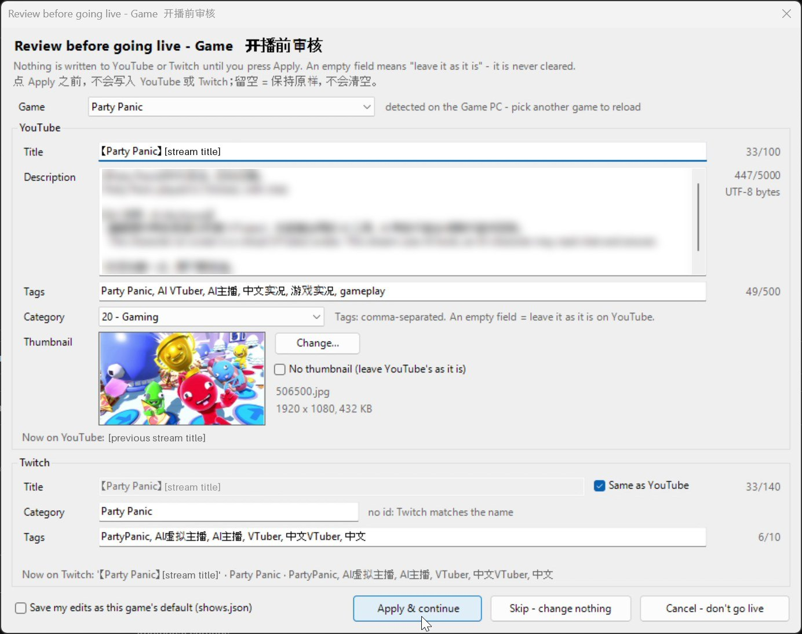
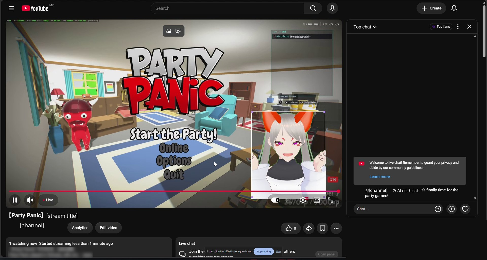
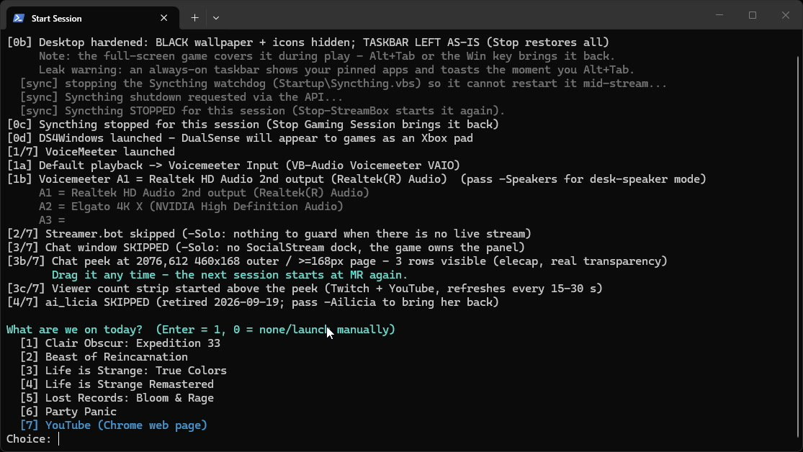
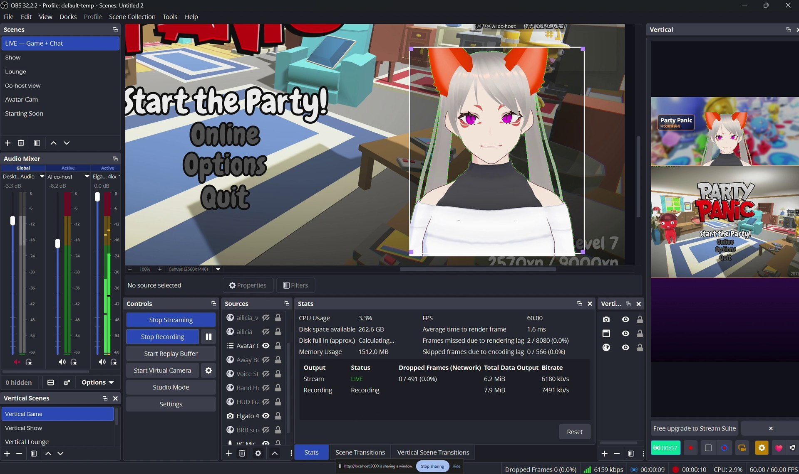
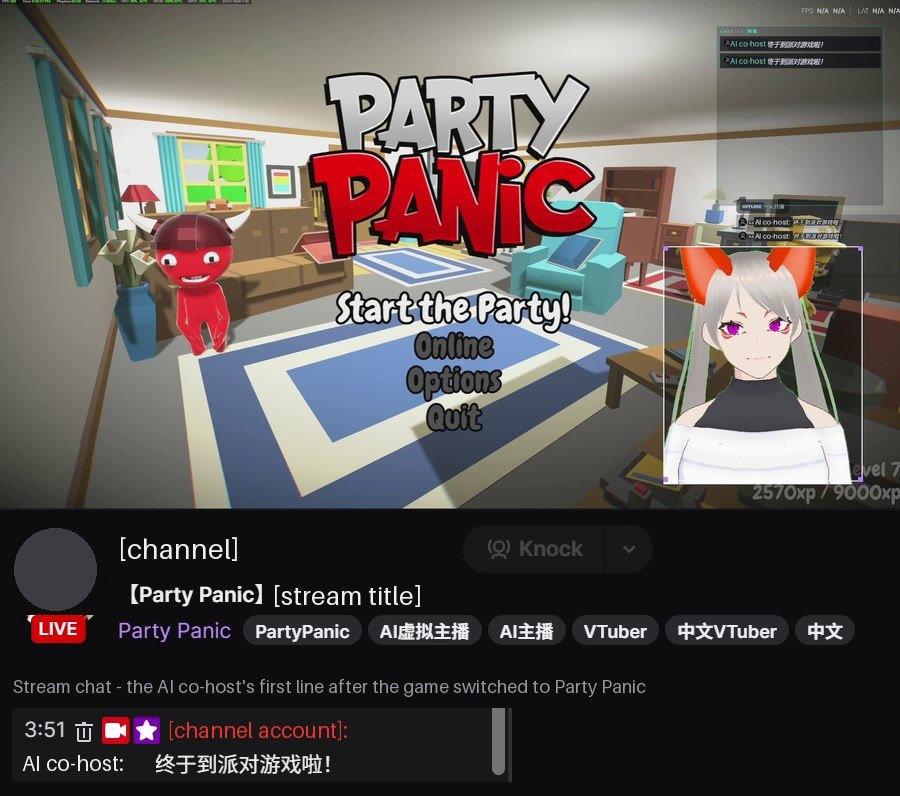
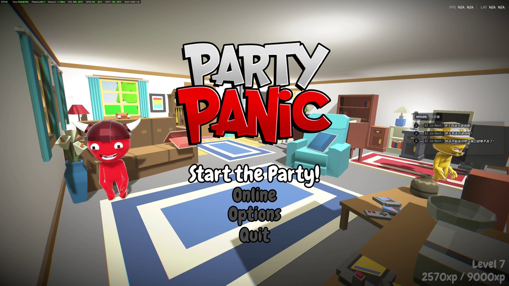

Tan Carlson · Software Engineer · automation and AI integration
I stream games to YouTube and Twitch at the same time from two PCs. One runs the game; a laptop runs OBS, an AI co-host and the automation. Claude Code built the automation to my direction. This page follows one real session in late October 2026, from pressing START to live on both platforms, using screen recordings of both PCs.
One START on each PC sets everything up. No stream title, description, tags, category or thumbnail changes until I approve it on a review card, and an AI co-host comments on the game in chat within set limits.
Each opens what the stream needs and pauses file sync; the laptop's also waits until YouTube is ready (19 s this time).
The stream's title, description, tags, category and thumbnail wait on a review card. After Apply they are written (on Twitch: title, category and tags) and, except the thumbnail, read back.
from my Apply to live on both YouTube and Twitch in this session. I start the stream myself.
The AI co-host's own lines: at most one per 20 s; its replies to viewers: one per 30 s. Every line is labelled as AI, and one hotkey mutes it at once.
Purple = the AI model, gold = me; the grey steps are scripts and APIs.


Chose the two-PC setup and asked for or approved its rules: a review card before any title, tag or thumbnail is written, AI lines labelled as AI, a mute hotkey. I ran the live tests and handle the YouTube Studio settings the API cannot reach.
Wrote the launchers, the review card, the YouTube and Twitch writers with read-back, the live watcher and the chat relay, with 167 Python tests and 809 PowerShell checks for the metadata step (30 Oct 2026). OBS, the AI character app and the chat tools are existing apps.
Each step opens with a click. Purple = the AI model, gold = me, blue = scripts and APIs.
The Game PC's START stops file sync for the session, sets the audio routing, opens a small chat overlay that floats over the game, then asks which game I am playing. The answer starts a small now-playing feed on the home network, which the laptop reads in step 3.
File sync is stopped on purpose: on 30 July 2026 a sync of a growing recording, in the middle of a stream, collapsed the Twitch bitrate. File sync starts again when I stop the session.

The laptop's START opens the apps the stream needs in an order that matters: the chat capture app (Social Stream Ninja) before OBS, because OBS only displays what that app produces, and OBS last of the core apps, because it takes the capture card that carries the Game PC's picture for itself. The AI co-host and its chat relay start right after OBS. File sync stops here too.
It then opens YouTube Studio and re-checks YouTube with read-only dry runs until the broadcast is ready, for up to 90 seconds. In this session that took 19 seconds and 3 checks; an earlier start the same day took 89 seconds. Until a fix on 10 October, the launcher read YouTube too early, and YouTube failed while Twitch worked; see the table at the end.
No title, description, tags, category or thumbnail is written until I press Apply. The card proposes:
Fail-closed rules: an empty field leaves the old value as it is, never cleared. If the waiting YouTube broadcast changes between the review and Apply, Apply is blocked. "Save my edits" keeps only the fields I changed, as that game's default.
Apply writes the YouTube title, description, tags, category and thumbnail through the YouTube Data API, and the Twitch title, category and tags through Streamer.bot. Then it reads them back from each platform to confirm they were saved (the YouTube thumbnail is set, not read back). Going live stays a separate step: I start the stream myself.
stream_shows/runtime/studio_wait.log, twitch.log, watcher.log · this session, lightly trimmed, broadcast id removed
15:51:40 wait start: show game, dry run 1 = code 11 after 2 s, waiting up to 90 s 15:51:47 dry run 2 = code 11 at 9 s 15:51:57 dry run 3 = code 0 at 19 s 15:51:58 twitch get -> ok 15:52:15 twitch set -> ok (title ok, category ok, tags ok) 15:52:16 watcher: waiting for the broadcast to go live (every 15 s) 15:52:48 watcher: wait-live code 0, lifecycle live 15:52:49 SSN restarted: closed gracefully=True, down about 1.2 s
A dry run is a read-only check. Code 11 means YouTube had no broadcast ready yet; code 0 means it was ready. Apply was pressed between 15:51:58 and 15:52:15.

A watcher checks the YouTube broadcast every 15 seconds. Once it is live, it restarts the chat capture app so that it attaches to the now-live YouTube chat. In this session chat capture was down for about 1.2 seconds.

The co-host is built on AITuberKit, an existing AI-character app, running Google Gemini 3.5 Flash-Lite with image input. It watches the game feed and comments on it. The chat relay that Claude Code wrote connects it to both platforms, with limits:

aituberkit_test/ssn_relay.log · this session, trimmed; the AI's persona label is replaced by [AI label]
15:51:16 C sendChat -> 200 [AI label]：终于到派对游戏啦！
15:51:17 C landed on twitch
15:51:17 A drop flag:bot
15:52:01 C not seen on youtube 45s after posting
"终于到派对游戏啦！" means "Party game time at last!". "drop flag:bot" is the relay ignoring its own line. YouTube was confirmed live only at 15:52:48, and the relay reported the post as not seen there instead of assuming it had landed.
Times are from the launcher logs (Malaysia time); the OBS figures are from its Stats panel in the screenshot below.
Every row comes from my project records or the logs, with the date it happened.
| When | What happened | Root cause | What changed |
|---|---|---|---|
| 30 Jul 2026 | The Twitch bitrate collapsed mid-stream. | File sync was copying the growing stream recording to the other PC. | Both STARTs stop file sync for the session; Stop starts it again. |
| 4 Oct 2026 | Before the first real run, a review found that the Twitch request body would go out as a list of numbers. | PowerShell unrolls a byte array that a function returns, so the body would have been sent as decimal text. The tests passed because they used a fake; an adversarial review that sent a real request to a local listener caught it. | The function returns the byte array whole: return ,([System.Text.Encoding]::UTF8.GetBytes($json)). |
| 4 Oct 2026 | After I picked the phone-format key in YouTube Studio, Studio swapped the two stream keys. | Studio-side behaviour. The API can see only the main key, not the phone-format one. | The launcher's main-key check blocked the start. Since 30 Oct the launcher switches the main key back once through the API, then checks again. |
| 5 Oct 2026 | Twitch control (Streamer.bot) would not start. | Windows Smart App Control blocked one of its unsigned files, found in the Windows event log. Not our code. | The security setting was left alone: changing it is my call, not the agent's. |
| 7 Oct 2026 | "Streamer.bot is not running", with Streamer.bot open. | Its server takes about 37 s to come up; the launcher waited 25 s. | Waits up to 60 s, with a clearer message. |
| 7–9 Oct 2026 (fixed 10 Oct) | YouTube failed after Apply; Twitch was fine. | The launcher read YouTube before Studio had prepared the broadcast. | Opens Studio first and re-checks for up to 90 s (19 s in this session). |
| Late Oct 2026, same day | Twitch went live; YouTube did not. | Claude Code wrote a read-only probe: YouTube received both video feeds for 3 minutes but never started the broadcast, so OBS and the launcher were fine. My screenshot of Studio showed the cause: its phone-format panel was set to an old, unused key and waited for a feed that never came. The API cannot read that setting. | I switched it by hand in Studio and the broadcast went live right after. Rule kept: the agent diagnoses read-only; Studio settings stay my job. |
A single-operator setup with a small audience: the YouTube page above shows one viewer. The point is the automation and the gates, not reach. OBS, AITuberKit, Social Stream Ninja and Streamer.bot are existing tools; what was built is the launch automation, the review gate, the API writers and the chat relay. Some steps stay manual on purpose: starting the stream, and any YouTube Studio setting the API cannot reach.